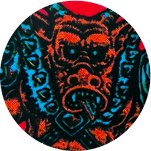
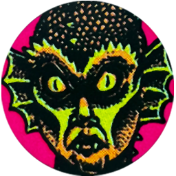
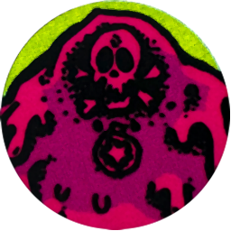
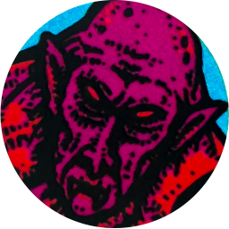

AGAINST THE HAND OF DOOM
The malevolent sorcerous power of the Hand of Doom threatens to render all your accomplishments obsolete! Against an entity of such terrifying power your only chance is to trap it forever in the Puzzle Prison; a gateway to some unknown netherworld beyond the Void that exists impossibly within a small puzzle box of intricate & ancient design.
SETUP
The Mission ĝ deck is made up of four powerful artifacts that will aid you against the Hand & the Necromancer's warlords.
ĝ Doombringer Horn (Epic Loot)
ĝ Mirror Shield (Epic Loot)
ĝ Puzzle Prison (Epic Loot)
ĝ Void Powder (Epic Loot)
These four fearsome entities serve the Necromancer as warlords & one of them carries the Puzzle Prison.
| đ Brute Lord at the Hell Pit |  |
| đ Serpent Lord at the Maze |  |
| đ Slime Lord at Crystal Crater |  |
| đ Vampyr Lord at the Catacombs |  |
Place a random Epic Loot card from the Mission ĝ deck facedown under each Epic Monster card.
OBJECTIVE
If you Dispel the Hand of Doom while you have the Puzzle Prison, you may trap it inside the Puzzle Prison, achieving victory against the Hand of Doom!
WARLORDS OF THE NECROMANCER
To claim the Puzzle Prison, you must find & destroy the warlord who guards it. Each deadly warlord commands a legion of the Necromancer's devoted followers.
When you destroy one of the four Epic Monsters listed in Setup, do not make a Loot roll - instead, take the Epic Loot card from beneath that Epic Monster's card.
When you destroy the Serpent Lord, also place a Voidgate at the Hell Pit, unless there is already a Voidgate in that space or there are already 2 Voidgates in the Badlands.
MISSION PATH
As the intricate twisting pieces of the Puzzle Prison turn & bend, so does the fabric of space & time. The Hand of Doom vanishes, trapped within the infinite reflections of the mirrored surface of the puzzle. At last, you have rid the Borderlands of the Hand's evil presence! You bask in glory as the Necromancer plots revenge. You are victorious, for now...